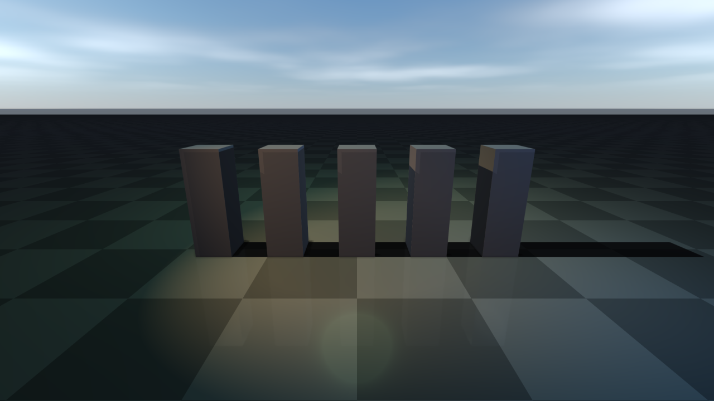
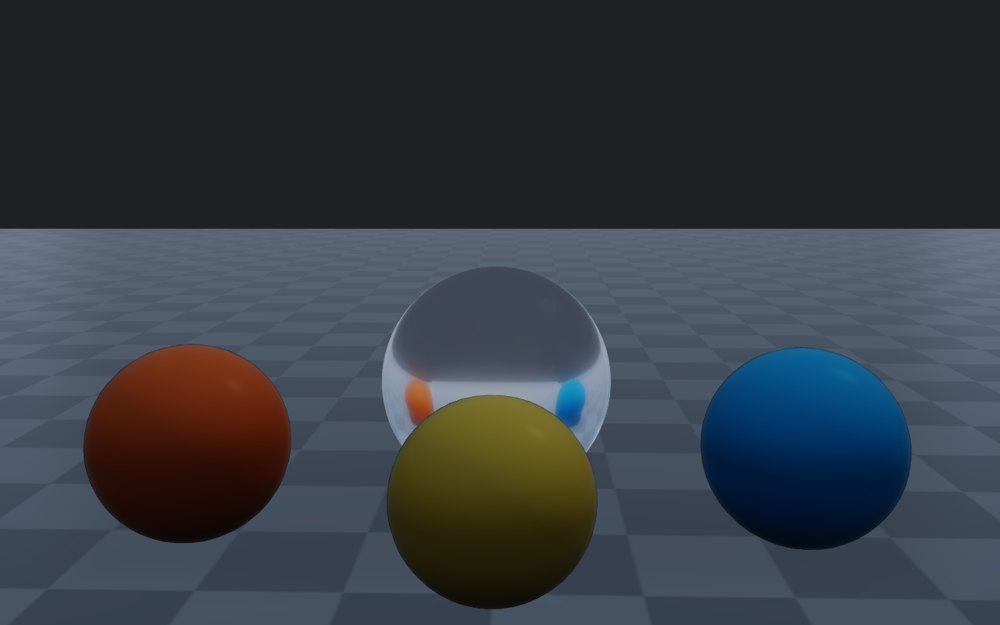
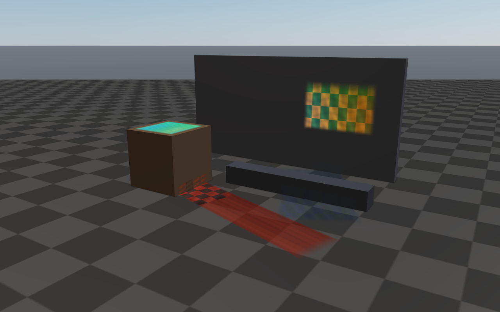
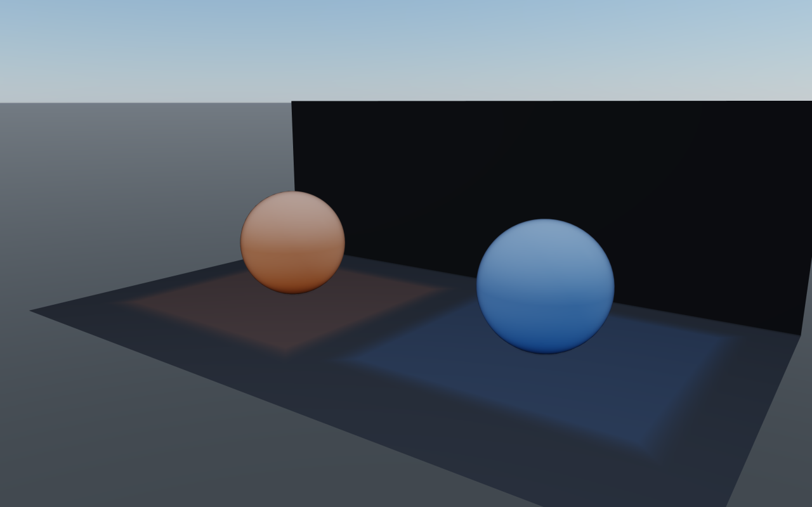
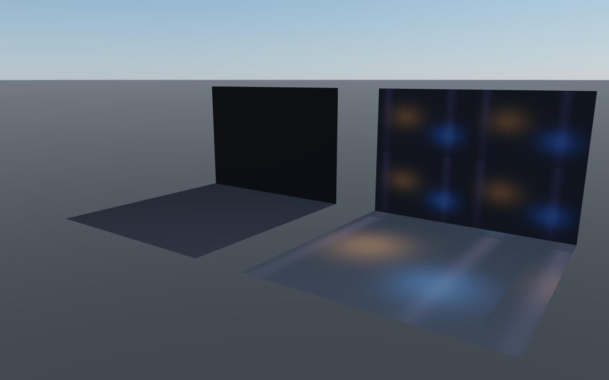

Lighting, shadows, and HDR/IBL
This page covers the main directional light, additional spot/point/area lights, shadow budgets, HDR/image-based lighting, and reflection probes. For the overall render-quality preset that controls shadow defaults, see Render quality, tone mapping, color grading. For weather-driven lighting (sun position over time of day, lightning, cloud shadows) see Weather and atmospherics.
Shadows and lights
rayrai has a fast single-main-light path for robotics workloads and a higher-quality multi-light path for authored visual scenes. The main light is a directional light and is always the cheapest shadow-casting source. Imported glTF/Blender scenes can also use additional directional, point, spot, and area-style lights.
Shadow defaults are tuned so a directional shadow is clearly visible without
any per-application setup. Every preset uses a compact directional shadow
ortho box (halfSize=12.5, near=0.1, far=55) and a single
cascade, which keeps each shadow-map texel small enough that the resulting
shadow stays crisp even with bright IBL fill. Balanced and High use brighter
ambient/IBL defaults than older releases so smooth metallic surfaces do not
read black under sky fill; Ultra keeps more contrast through lower direct
ambient, stronger IBL, and AgX tone mapping. Raise mainLightAmbient or
lower shadowStrength for a flatter indoor look; the defaults are aimed at
outdoor daylight.
By default, the main shadow center tracks a point in front of the camera and the shadow
box is fixed in size. You can customize both via RayraiWindow:
// shadow center is N meters ahead of the camera (default: 10.0)
viewer.setShadowCenterOffset(12.0f);
// shadow box (default: halfSize=12.5, near=0.1, far=55.0)
viewer.setShadowOrtho(20.0f, 0.1f, 80.0f);
If you need a fully custom shadow view/projection, use the lower-level
raisin::Light API directly.
Additional lights are controlled explicitly and capped so the fast path stays fast.
Rayrai currently supports up to RayraiWindow::kMaxAdditionalLights additional lights
and up to RayraiWindow::kMaxAdditionalShadowLights additional shadow maps. Directional,
spot, and area-style lights use 2D shadow maps. Point lights use cubemap shadow maps.
Shadow framebuffer setup validates the current OpenGL context and recreates stale
framebuffer/texture names when a viewer context is rebuilt; this matters for TCP-viewer
lifetime, offscreen tests, and applications that create/destroy render contexts.
For imported scenes, RenderQualitySettings::autoSelectImportedShadowLight can promote
the strongest imported light to the main shadow caster, while the remaining shadow budget
is assigned to additional lights.
raisin::RayraiWindow::AdditionalLight fill;
fill.type = raisin::LightType::DIRECTIONAL;
fill.direction = glm::normalize(glm::vec3(0.4f, -0.2f, -0.8f));
fill.diffuse = glm::vec3(0.10f, 0.12f, 0.16f);
viewer.addAdditionalLight(fill);
raisin::RayraiWindow::AdditionalLight spot;
spot.type = raisin::LightType::SPOT;
spot.position = glm::vec3(1.8f, -1.6f, 2.6f);
spot.direction = glm::normalize(glm::vec3(-1.4f, 1.0f, -1.8f));
spot.diffuse = glm::vec3(0.18f, 0.42f, 1.0f);
spot.spotInnerCos = std::cos(glm::radians(14.0f));
spot.spotOuterCos = std::cos(glm::radians(28.0f));
// Optional spotlight projector cookie, color temperature, and distance fade.
spot.projectorMap = projectorTextureId;
spot.temperatureEnabled = true;
spot.temperatureKelvin = 4200.0f;
spot.distanceFadeEnabled = true;
spot.distanceFadeBegin = 18.0f;
spot.distanceFadeLength = 6.0f;
spot.castsShadows = true;
viewer.addAdditionalLight(spot);
raisin::RayraiWindow::AdditionalLight area;
area.type = raisin::LightType::AREA;
area.position = glm::vec3(0.0f, 1.8f, 2.1f);
area.diffuse = glm::vec3(0.55f, 0.65f, 0.42f);
area.radius = 1.4f;
area.areaSize = glm::vec2(1.8f, 0.9f);
viewer.addAdditionalLight(area);
viewer.clearAdditionalLights();
{kind=link}

Each AdditionalLight supports the basic attenuation/spot/area parameters above plus
optional projector cookie texture, color-temperature override (Kelvin), distance fade for
both lighting and shadow casting, and a per-light shadow toggle. Imported scenes can be
brought in with importSceneLights(sceneFile, intensityScale), and
promoteDominantAdditionalLightToMainShadowCaster() reassigns the strongest imported
light to the main shadow path so the remaining shadow budget covers the rest.
The main raisin::Light returned by RayraiWindow::getLight() exposes
ergonomic helpers for spotlight angles and point-light
range so callers do not have to set raw cosine/attenuation fields by hand:
auto& main = viewer.getLight();
main.setSpotAngles(/*innerDeg=*/14.0f, /*outerDeg=*/28.0f);
main.setRange(/*rangeMeters=*/12.0f); // picks constant/linear/quadratic so
// intensity ~1% at 12m, and sets
// radius=12 as a culling hint.
Numeric units used throughout raisin::Light: positions and radius /
distanceFade* in metres; temperatureKelvin in Kelvin; setSpotAngles
takes degrees (and stores the cosines internally so the raw
spotInnerCos / spotOuterCos fields are still meaningful). The
AdditionalLight plain-data struct uses the same field conventions, so
std::cos(glm::radians(deg)) is still the manual recipe for those.
Shadow update cost is configurable. Dynamic scenes can update shadows every frame; static visual scenes can bake shadow maps at startup or refresh them only when light/object placement changes.
auto quality = raisin::RayraiWindow::defaultRenderQualitySettings(
raisin::RayraiWindow::RenderQualityPreset::Ultra);
quality.updateShadowsEveryFrame = false; // startup/on-demand shadow bake
quality.maxAdditionalLightsPerFrame = 12; // light evaluation budget
quality.maxAdditionalShadowLights = 4; // 2D shadow-map budget
quality.maxPointShadowLights = 2; // cubemap shadow budget
quality.additionalShadowResolutionScale = 0.5f;
quality.pointShadowResolutionScale = 0.5f;
viewer.setRenderQualitySettings(quality);
Use lower budgets for interactive editing or RL throughput. Use higher budgets for offline screenshots, inspection, or demos where visual fidelity is more important than frame time.
HDR, image-based lighting, and reflections
rayrai supports HDR equirectangular environments for real-time PBR preview and inspection. The HDR path is not a ray tracer; it precomputes cubemap data for environment background, diffuse irradiance, specular prefiltering, and a split-sum BRDF lookup table, then samples those textures in the PBR shader.
The simplest setup is the PbrEnvironment bundle, which packs the four GL
handles (radiance cubemap, diffuse irradiance, prefiltered specular, split-sum
BRDF LUT) plus the mip count and an overall strength scalar into one struct:
auto env = raisin::PbrEnvironment::loadFromHdrFile("/path/to/environment.hdr");
if (env.isComplete()) {
visual->setPbrEnvironment(env);
}
PbrEnvironment::LoadOptions exposes the per-cubemap resolution, sample
count, BRDF LUT size, and a default strength when the defaults are not
appropriate. Optional parallax-corrected box projection is set via
boxProjection / probePosition / boxMin / boxMax on the bundle.
The lower-level static creators are still available when callers want to manage GL handles individually:
const char* hdr = "/path/to/environment.hdr";
unsigned int env = raisin::RayraiWindow::loadHdrEquirectangularCubemap(hdr, 128, true);
unsigned int irradiance = raisin::RayraiWindow::createHdrIrradianceCubemap(hdr, 32, 64);
unsigned int prefiltered =
raisin::RayraiWindow::createHdrPrefilteredEnvironmentCubemap(hdr, 128, 5, 64);
unsigned int brdf = raisin::RayraiWindow::createSplitSumBrdfLut(128, 128);
visual->setPbrEnvironment(env, irradiance, prefiltered, brdf, 1.0f);
Use HDR environments with visible features when inspecting reflective materials. A
featureless sky or uniform studio HDR can make it hard to tell whether reflections are
working. rayrai_pbr_material_grid, rayrai_pbr_texture_maps, and
rayrai_visual_asset_support use HDR/image-based lighting so metallic and
glossy surfaces show visible reflections while non-metallic assets remain
mostly diffuse.
For scene-wide reflections, rayrai also has static reflection probe capture, local probe selection, reflection-probe sidecars, and planar ground reflection support. These are real-time approximation tools: they improve visual fidelity without enabling path tracing or other slow offline rendering mechanisms. Choose lower environment resolution, fewer prefilter samples, and fewer reflection updates for fast interactive runs; increase those values for screenshots or inspection.
auto capture = raisin::ReflectionProbeCaptureSettings{};
capture.resolution = 128;
auto filter = viewer.reflectionProbeFilterSettingsForCurrentQuality();
auto probe = viewer.captureFilteredReflectionProbe(
{0.0f, 0.0f, 1.5f}, 6.0f, 1.0f, capture, filter);
viewer.addReflectionProbe(probe);
viewer.applyNearestReflectionProbe(*visual, visualPosition);
Use captureReflectionProbeCubemapCached/captureFilteredReflectionProbeCached
when the same probe position is recomputed across frames (for example, while authoring
or scrubbing weather). The cache is content-addressed by capture/filter settings; call
clearReflectionProbeCache() to drop it. selectReflectionProbeBlend(position)
returns the weighted blend that applyNearestReflectionProbe uses internally, which
is useful for debug overlays.
Authored scene sidecars can ship next to imported assets and describe reflection probes, environment/background settings, and weather. Loading and applying them is symmetric:
// Reflection probe sidecar: probes plus selection/filter quality settings.
std::string probePath;
auto probes = raisin::RayraiWindow::loadReflectionProbeSidecar(
sceneFile, /*settingsOut=*/nullptr, &probePath);
viewer.applyReflectionProbeSidecarQualitySettings(sceneFile);
// Environment sidecar: HDR, intensity, rotation, sky tint.
std::string envPath;
auto env = raisin::RayraiWindow::loadEnvironmentSidecar(sceneFile, &envPath);
viewer.applyEnvironmentSidecarSettings(sceneFile);
// Weather sidecar: preset/settings plus local fog volumes.
std::string wxPath;
auto wx = raisin::RayraiWindow::loadWeatherSidecar(sceneFile, &wxPath);
viewer.applyWeatherSidecarSettings(sceneFile);
// Authoring helper: serialize a weather setup next to the scene file.
raisin::RayraiWindow::writeWeatherSidecar(
"/path/to/scene.weather.json", weatherSettings, localFogVolumes);
suggestReflectionProbePlacementFromSceneBounds() is a non-mutating helper that
proposes probe positions from current scene AABBs; use it as a starting point when
authoring a sidecar by hand.
Reflections, decals, irradiance volumes, and lightmaps
Beyond probes and IBL, rayrai supports projected decals, irradiance volumes, and authored lightmaps as cheap indirect-light alternatives:
Projected decals (
addProjectedDecal) — project a textured box onto any surface inside it; supports albedo / emission / normal / ORM slots, per-decal UV scaling, and distance fade.Irradiance volumes (
addIrradianceVolume) — blanket a region with a constant indirect colour for authored interiors that need indirect light without a full GI bake.Lightmaps — populate
Material::lightmapMapfrom an external bake tool to drive92_lightmap_gi-style authored interiors.
// Projected sign / poster decal.
raisin::ProjectedDecal sign;
sign.center = glm::vec3(2.0f, 0.0f, 1.6f);
sign.halfExtents = glm::vec3(0.6f, 0.05f, 0.3f);
sign.color = glm::vec4(1.0f);
sign.albedoMap = posterTextureId; // sRGB poster art
sign.emissionMap = emissiveTextureId; // optional glow
sign.emissionEnergy = 1.5f;
sign.albedoMix = 1.0f;
sign.distanceFadeEnabled = true;
sign.distanceFadeBegin = 12.0f;
sign.distanceFadeLength = 4.0f;
viewer.addProjectedDecal(sign);
// Interior indirect light volume covering a room.
raisin::IrradianceVolume room;
room.center = glm::vec3(0.0f, 0.0f, 1.5f);
room.halfExtents = glm::vec3(4.0f, 4.0f, 1.7f);
room.color = glm::vec3(0.32f, 0.30f, 0.28f);
room.strength = 0.85f;
room.edgeFade = 0.22f;
viewer.addIrradianceVolume(room);
// Lightmap-driven authored interior.
auto floor = raisin::Material::pbr("floor", glm::vec4(1.0f),
/*metallic=*/0.0f, /*roughness=*/0.55f);
floor.albedoMap = floorAlbedoMapId;
floor.lightmapMap = floorLightmapBakeId; // second UV channel
floorVisual->setMaterialOverride(floor);
Reflection probe |
Projected decals |
|---|---|
 |
 |
Irradiance volumes |
Lightmap GI |
 |
 |